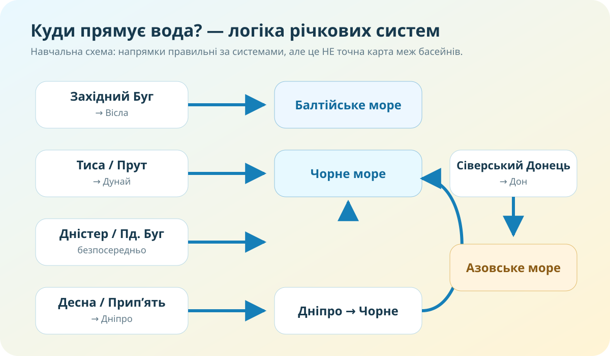

Куди дістанеться крапля?
📍 Захід Волині
Крапля потрапила до Західного Бугу. Яке море буде фінальним?
📍 Закарпаття
Крапля потрапила до Тиси. Через яку велику річку вона піде далі?
📍 Харківщина
Крапля потрапила до Сіверського Дінця. До якого моря веде система?
Басейн — це не область, а територія, з якої вода стікає в одну систему

Для перевірки сучасних назв використовуйте офіційні джерела. Водний кодекс встановлює 9 районів річкових басейнів: Дніпра, Дністра, Дунаю, Південного Бугу, Дону, Вісли, річок Криму, Причорномор’я та Приазов’я.
Побудуйте маршрут: притока → головна річка → море
Натискайте на назву. Ваше завдання — проговорити повний ланцюг і визначити морський басейн.

Чому межа басейну часто «сидить» на височині?
Вододіл
Уявіть гребінь даху. Вода з одного схилу стікає в одну систему, з другого — в іншу. У рельєфі таку межу називають вододілом.
Дніпро як вісь міст: розташуйте їх згори вниз за течією
Натискайте міста у правильній послідовності від півночі до гирла. Потрібно 7 із 7.
0 / 7
Тепер збираємо поняття в систему
Річкова система
Головна річка разом із усіма притоками. Наприклад, Десна й Прип’ять є частинами системи Дніпра.
Річковий басейн
Територія, з якої поверхневі та пов’язані з ними води стікають до певної річкової системи.
Вододіл
Межа між сусідніми басейнами. Часто проходить по підвищеннях рельєфу.
| Система / район | Куди зрештою стікає вода | Орієнтир |
|---|---|---|
| Дніпро | Чорне море | Десна, Прип’ять, Інгулець та багато інших приток |
| Дністер | Чорне море | захід і південний захід України |
| Південний Буг | Чорне море | велика річкова система, басейн повністю в межах України |
| Дунай | Чорне море | Тиса, Прут і прикордонна дельта Дунаю |
| Дон | Азовське море | Сіверський Донець — ключова українська частина системи |
| Вісла | Балтійське море | Західний Буг і Сян |
| Приазов’я | Азовське море | річки, що безпосередньо стікають до Азовського моря |
| Причорномор’я | Чорне море | малі й середні річки прямого чорноморського стоку |
| Річки Криму | Чорне / Азовське моря або локальний стік | окремий район басейну за Водним кодексом України |
Відео: річкові басейни України
Під час перегляду випишіть одну тезу, яку підтвердила карта, і одну деталь, яку треба було уточнити за офіційним джерелом.
Тест — 10 балів
Спершу ідентифікація. Тест відкриється після заповнення всіх полів.
Фінальний доказ: чому межі басейнів не збігаються з межами областей?
Міні-досьє «Куди стікає вода з моєї місцевості?»
Базовий рівень
1) В електронному підручнику опрацюйте тему про основні річкові басейни України. 2) Знайдіть свою область на карті басейнів. 3) Запишіть ланцюг: місцева річка → більша річка → головна система → море.
Електронний підручник / ВШО ↗Дослідницький рівень
Перевірте маршрут за геопорталом Держводагентства. Додайте скриншот або посилання на карту й 3–4 речення: де проходить найближчий вододіл і який елемент рельєфу може його пояснювати.
Водні ресурси України ↗Звідки беремо факти
Водний кодекс України, ст. 13¹ — офіційні райони річкових басейнів. Держводагентство, Державний водний кадастр — поверхневі водні об’єкти й геопортал. Держводагентство України — актуальна басейнова інформація.